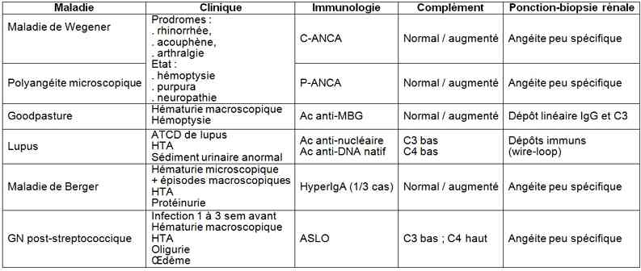

Bienvenue Sur Medical Education
Glomérulonéphrite rapidement progressive
Adulte
Spécialité : génito-urinaire / infectieux /
Spécialité : génito-urinaire / infectieux /
Points importants
- Situation clinique rare
- Urgence diagnostique (ponction biopsie rénale dans les meilleurs délais)
- Urgence thérapeutique pour éviter l'évolution vers l'IRC, car seul un traitement spécifique permettra d'améliorer la fonction rénale
Présentation clinique / CIMU
SIGNES FONCTIONNELS
Généraux
- Syndrome pseudo-grippal (fièvre, arthralgies, malaise, lombalgies) fréquent avant la phase d'état
-
Signes d'accompagnement en rapport avec la maladie causale :
- arthrite inflammatoire, inflammation des cartilages de la face
- dyspnée, hémoptysie
- uvéite
- lésions cutanéomuqueuses
- rhinorrhée
- neuropathie
CONTEXTE
Terrain
- Pas de terrain prédisposant
Traitement usuel
- Immunosuppresseurs
- Stéroïdes
Antécédents
-
Maladie systémique connue :
- granulomatose de Wegener
- polyangéite microscopique
- syndrome de Goodpasture
- lupus érythémateux disséminé
- Maladie de Berger (glomérulonéphrite à IgA)
- Glomérulonéphrite post-streptococcique
EXAMEN CLINIQUE
- Œdèmes périphériques blancs, mous, indolores, dans les zones déclives
- HTA
- Oligurie
- Anomalies du sédiment urinaire (hématurie microscopique, leucocyturie aseptique)
-
Facteurs de gravité :
-
systémiques liées à l'affection causale :
- anurie
- hémorragie intra-alvéolaire
- troubles métaboliques imposant la dialyse
- atteinte neurologique centrale
-
systémiques liées à l'insuffisance rénale aiguë :
- surcharge vasculaire, OAP
- encéphalopathie urémique
-
systémiques liées à l'affection causale :
EXAMENS PARACLINIQUES SIMPLES
- Glycémie capillaire
- ECG (troubles du rythme par hyperkaliémie)
- Bandelette urinaireProtéinurie
CIMU
- Tri 1 : si troubles de conscience, signes de choc (marbrures, cyanose, PA imprenable), détresse respiratoire
- Tri 2 : fièvre avec signes de gravité clinique : T° > 39°C ou < 36°C, FR > 20/min, SpO2 < 90% à l'air ambiant, PAS < 90 mmHg, FC > 120 bpm
- Tri 3 : toute autre situation
Signes paracliniques
BIOLOGIQUE
- NFS (hyperleucocytose, anémie), plaquettes
- Ionogramme sanguin, urée, créatinine (insuffisance rénale aiguë, hyperkaliémie)
- Glycémie
- Prélèvements immunologiques en urgence : anticorps (anti-membrane basale glomérulaire : anti-MBG, ANCA, anti-nucléaire, anti-DNA natif, ASLO) complément (C3, C4 CH50)
- ECBU
IMAGERIE
- Selon la symptomatologie, la radiographie pulmonaire est impérative
- TDM thoracique si suspicion de maladie de Wegener ou de syndrome de Goodpasture
Diagnostic étiologique
- Basé sur un faisceau d'arguments cliniques
- Affirmé par la PBR qui précise le diagnostic
Diagnostic différentiel
- Toute insuffisance rénale aiguë et en particulier la nécrose tubulaire aiguë
Traitement
TRAITEMENT PREHOSPITALIER/INTRAHOSPITALIER
- Traitement symptomatique des détresses vitales
MEDICAMENTS
-
Pas de traitement spécifique en urgence avant avis spécialisé :
- comme l'Endoxan ou bolus de stéroïdes (équivalent prednisone 1 g/j x 3 jours ; bolus IV 3 jours puis 1 mg/kg/j pendant 6 à 8 semaines)
Surveillance
CLINIQUE
- PA, FC
- FR, SpO2
- Score de Glasgow
- Hémoptysie
PARACLINIQUE
- Ionogramme sanguin, fonction rénale, sédiment urinaire, protéinurie
- Imagerie (en particulier pulmonaire)
Devenir / orientation
CRITERES D'ADMISSION
- Toute suspicion de GNRP
CRITERES DE SORTIE
- Aucun, tant que le diagnostic étiologique n'est pas étayé
Mécanisme / description
- C'est une glomérulonéphrite avec dépôts extra-capillaires : « croissants extra-capillaires »
- Rupture du filtre glomérulaire avec prolifération de cellules épithéliales, afflux de cellules inflammatoires et dépôts de fibrine
-
La topographie des dépôts d'Ig permet leur classification :
- dépôts linéaires : syndrome de Goodpasture
- dépôts granuleux : PR, cryoglobulinémie, LED, maladie sérique, vascularite d'origine infectieuse
- absence de dépôts : maladie de Wegener, polyangéite microscopique, GN « extra-capillaire » pauci-immune
Bibliographie
- Savie J, Duke G. Glomerulonephritis. Pp362-72I. in Critical Care Nephrology, 2nd edition. Ronco C, Bellomo R & Kellum JA. 2009. Saunders Elsevier Ed
Auteur(s) : Yann-Erick CLAESSENS